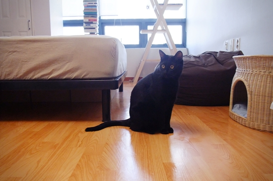
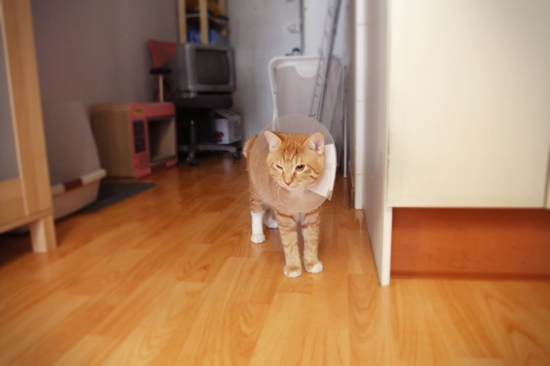
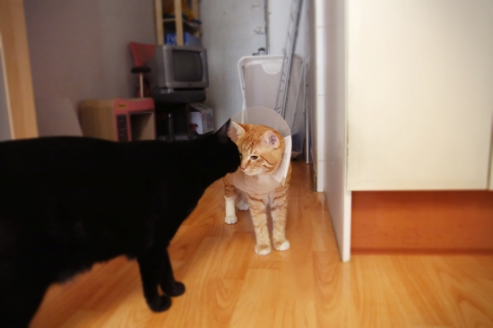
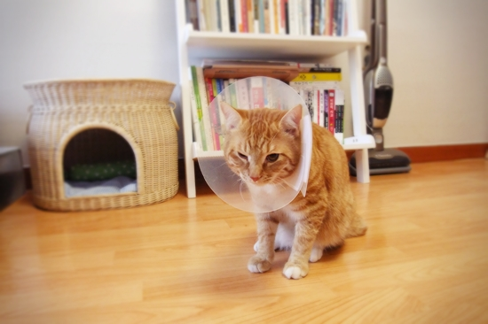
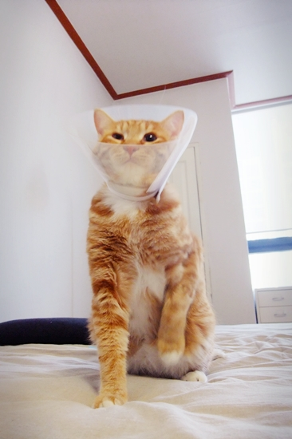

어라, 망고가 없네?
다녀왔...어.
(우쭈쭈) 어딜 다녀온 게야?
따... 땅콩을 잃어버렸어. orz
미루던 망고의 중성화 수술 때문에 병원을 찾았다.
6개월 만에 망고의 몸무게는 두 배(5.04kg)로 불었고,
6.18kg인 간장과 더불어 비만 브러더스가 되었다.
건강 파산하기 전에 다이어트를 시작하기로 했다.
간장은 수술 후 기력을 회복하기까지 시간이 좀 걸렸는데
망고는 역시 막내다운 똥꼬발랄함을 잃지 않고 회복이 빠르다.
목에 쓴 카라가 어색한지 문워크로 방 안을 돌아다니시는데
왜 이리 깜찍한지. ㅠ_ㅠ
상처 덧나지 말고 잘 아물어서 오래도록 엔조이하며 살자꾸나.
잌, 잌...